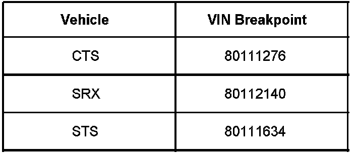
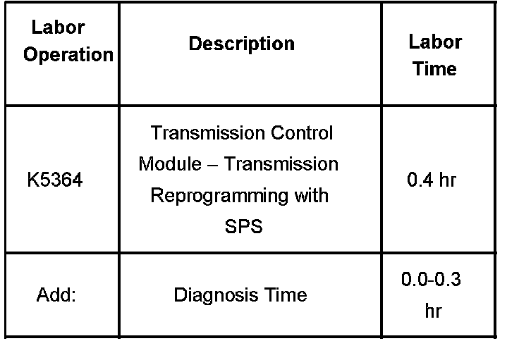

A/T Controls - MIL ON/DTC P2714 Set
Bulletin No.: 07-07-30-023Date: September 12, 2007
TECHNICAL
Subject:
6L50 Automatic Transmission - MIL Check Engine Light On, DTC P2714 (Reprogram TCM)
Models:
2008 Cadillac CTS, SRX, STS
with 6L50 Automatic Transmission (RPO MYB)

Built Prior to the VIN Breakpoints shown.
Condition
Some customers may comment on a transmission concern where the check engine light is illuminated. Upon investigation, the technician may find DTC P2714 in the TCM as current or in history.
Correction
A revised transmission calibration has been developed to address this issue. Reprogram the TCM with an updated software calibration. This new service calibration is available on TIS2WEB using the Service Programming System (SPS). As always, make sure your Tech 2(R) is updated with the latest software version.
After reprogramming the TCM, Service Fast Learn Adapts must be performed using the Tech 2(R). Check and clear all DTCs that may have set as a result of the programming process.
Warranty Information

For vehicles repaired under warranty, use the table.

Disclaimer